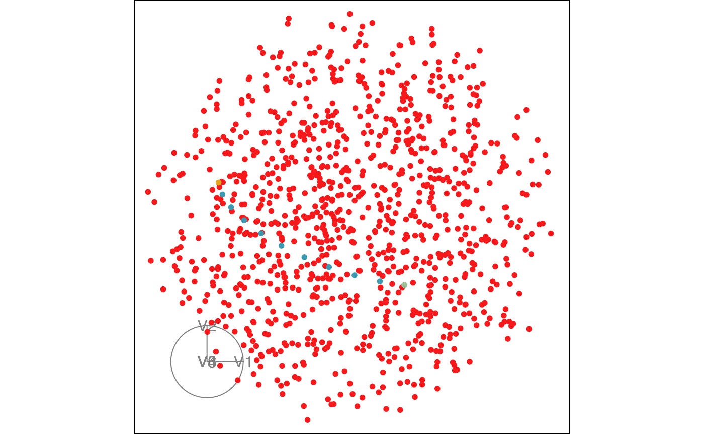

Plotting with woylier
Plotting_with_woylier.RmdThis vignette will demonstrate how to plot the interpolated path with the woylier package.
library(woylier)
library(geozoo)
library(ggplot2)
library(dplyr)
#>
#> Attaching package: 'dplyr'
#> The following objects are masked from 'package:stats':
#>
#> filter, lag
#> The following objects are masked from 'package:base':
#>
#> intersect, setdiff, setequal, union
library(purrr)1D example
1D projection of data in high dimension linear combination of data that is normalized. Therefore, we can plot the point on the surface of a hypersphere. The plot below the Givens interpolation steps between 2 points, 1D projection of 6D data that is.
# Generate 1D example
set.seed(2022)
p <- 6
base1 <- tourr::basis_random(p, d=1)
base2 <- tourr::basis_random(p, d=1)
# First example
frames <- givens_full_path(base1, base2, nsteps = 10)
sp <- generate_space_view(p=p)
sp_path <- add_path(sp, frames)
point1 <- as.data.frame(t(base1))
point1$type <- "point1"
point2 <- as.data.frame(t(base2))
point2$type <- "point2"
sp_path <- rbind(sp_path, point1, point2)
p
#> [1] 6
tourr::animate_xy(sp_path[,1:p], col=sp_path$type,
axes="bottomleft")
#> Converting input data to the required matrix format.
#> Using half_range 0.55
2D example
In case of 2D projections, we can plot the interpolated path between 2 frames on the surface of torus. Torus can be seen as crossing of 2 circles that are orthonormal.
# Generate 2D example
set.seed(2022)
n <- 1000
p <- 3
d <- 2
base1 <- tourr::basis_random(p, d)
base2 <- tourr::basis_random(p, d)
frames_2d <- givens_full_path(base1, base2, 10)
proj_2d <- map(1:n, ~tourr::basis_random(n = p, d=d)) %>%
purrr::flatten_dbl() %>%
matrix(ncol = p*2, byrow = TRUE) %>%
as_tibble()
#> Warning: The `x` argument of `as_tibble.matrix()` must have unique column names if
#> `.name_repair` is omitted as of tibble 2.0.0.
#> ℹ Using compatibility `.name_repair`.
# Path
path_2d <- t(apply(frames_2d, 3, c)) %>%
as.data.frame()
# Join
proj_2d <- proj_2d %>%
mutate(type="torus")
path_2d <- path_2d %>%
mutate(type="path")
proj_path <- bind_rows(proj_2d, path_2d)
tourr::animate_xy(proj_path[,1:6],
col=proj_path$type,
axes="bottomleft")
#> Converting input data to the required matrix format.
#> Using half_range 0.73